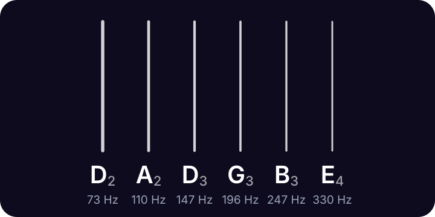

lodestone
lodestone
Drop D tuning
Drop D tuning is D A D G B E, from the thickest string to the thinnest: standard tuning with the 6th string lowered a whole step, from E to D.
Lodestone for iPhone shows these strings too, with the one you're tuning lit up. 99¢, once.
Drop D tuning notes and frequencies

| String | Note | Frequency | From standard |
|---|---|---|---|
| 6th | D2 | 73.42 Hz | E → D whole step down |
| 5th | A2 | 110.00 Hz | no change |
| 4th | D3 | 146.83 Hz | no change |
| 3rd | G3 | 196.00 Hz | no change |
| 2nd | B3 | 246.94 Hz | no change |
| 1st | E4 | 329.63 Hz | no change |
Frequencies use A4 = 440 Hz. Strings are numbered from the thinnest.
With the low string on D, the bottom three strings (D A D) make a power chord you can play with one finger, and the open low D gives you a deeper note to lean on.
Tap a string above to hear its note, or turn on the mic: the string you're tuning lights up and glows brighter as you get close.
How to tune to Drop D
- Play the open 4th string (D). Lower the 6th string until it rings the same note an octave below.
- Check it with harmonics: the 12th-fret harmonic on the 6th string should match the open 4th string.
Questions
How far do I lower the low E for drop D?
One whole step, which is two half steps or 200 cents: from E2 (82.41 Hz) down to D2 (73.42 Hz). The other five strings stay in standard tuning.
More tunings
- Standard E A D G B E
- Half step down E♭ A♭ D♭ G♭ B♭ E♭
- D standard D G C F A D
- Drop C C G C F A D
- DADGAD D A D G A D
- Open G D G D G B D
- Open D D A D F♯ A D
- Bass tuner E A D G
- Ukulele tuner G C E A
- Violin tuner G D A E
Lodestone for iPhone
Open Lodestone and play. It's already listening. Pick your instrument to see its strings, with the one you're tuning lit up. 99¢, once. No ads, no accounts, no subscription.